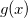
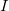
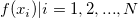
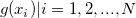
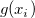
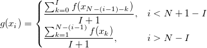
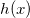

アルゴリズム (Decimate)
Decimt-Algorithm
移動平均フィルタとFIRフィルタを含む2つのフィルタを使って、デシメーションを実行します。
FIRフィルタ
このXファンクションで使われるFIRフィルタは、通常のウィンドウを元にした有限インルスフィルタです。フィルタの次数は、order 変数で指定されます。
移動平均フィルタ
移動平均フィルタが適用されると、Originは以下のステップを実行します。
- 入力範囲と同じサイズの新しいデータセット

を生成します。新しいデータセット内のそれぞれのデータは、移動窓内のデータポイントの平均です。移動ウィンドウのサイズは、ダイアログで指定する再サンプリングファクター
により定義されます。 {
} を入力データのY値とし、 {
} を新しいデータデットのY値とします(/math-8d9c307cb7f3c4a32822a51922d1ceaa.png "N") はデータセットのサイズ)。各
はデータセットのサイズ)。各 
は、次の計算式で算出します。

- ステップ1の計算プロセスを繰り返します。ここでは、新しいデータセット

を作成するために、入力範囲として新しく作成されたデータセットを使用します。
- 新しく作成されたデータセット を入力範囲としてフィルタなしのデシメーションを実行します。